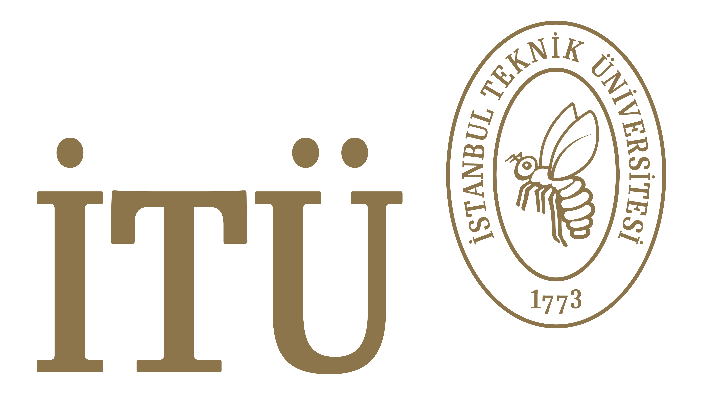

Education
University of Southern California — Ph.D. Astronautical Engineering (2025)
- 3.90/4.00 GPA
- Advisor: Garrett E. Reisman, PhD (former NASA Astronaut)
- Dissertation: The Investment Construct for Human Autonomy Teaming and Task Execution Support for Deep Space Habitats
- Grants and Fellowships: USC Viterbi School of Engineering Graduate Fellowship, NASA HOME Space Technology Research Institute Grant
- Awards: Best Research Assistant (Viterbi School of Engineering), Young Pioneer Award Finalist (Interntional Astronautical Federation)
University of Southern California — M.S. Astronautical Engineering (2020)
- 3.92/4.00 GPA
- Awards: Rocket Scientist of the Year (Viterbi School of Engineering)
- Relevant Courses: Introduction to Human Spaceflight and Operations, Human Factors of Spacecraft Operations, Low Cost Space Mission Design, Launch Vehicle Design, Space Systems Design, Orbital Mechanics I & II, Spacecraft Sensors
- Extracurricular: USC Liquid Propulsion Laboratory (LPL) and USC Space Engineering Research Center (SERC)

Istanbul Technical University — B.S. Astronautical Engineering (2018)
- 3.70/4.00 GPA
- Advisors: Cuma Yarım, PhD & Seher Eken, PhD
- Thesis: Artificial Gravity Express (AGE): Design of Tethered Space Vehicle with Artificial Gravity
- Relevant Courses: Rocket Propulsion, Spacecraft System Design, Orbital Mechanics, Space Environment
- Extracurricular: AIAA Space Mission Design Team, MATE ROV Team, URC ROVER Team, and Hyperloop Team